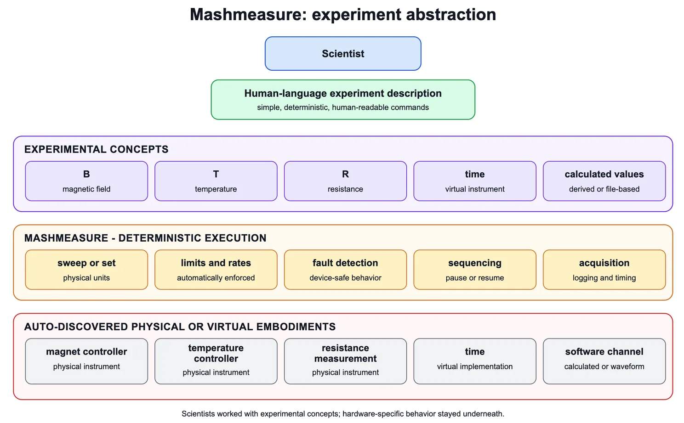
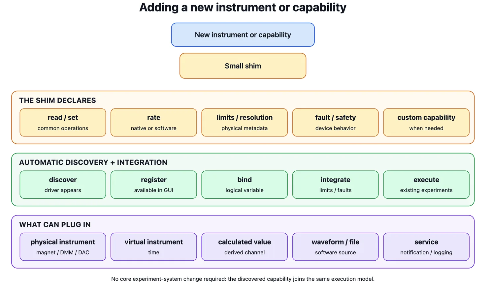
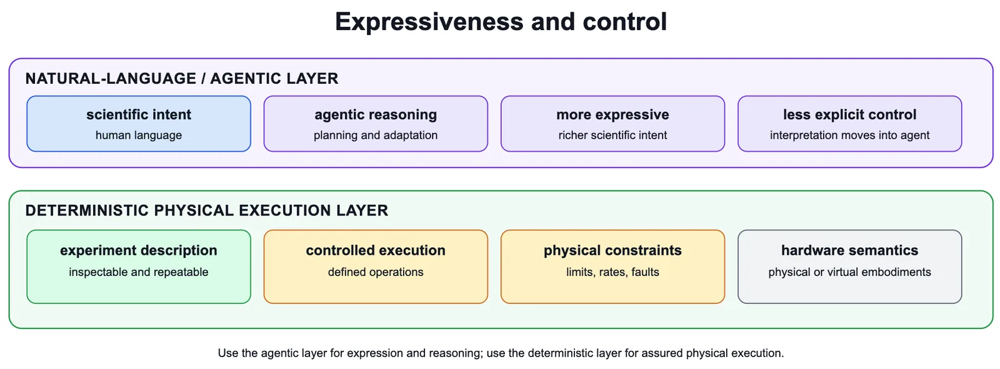

Imagine a world where a scientist can describe a physical experiment to perform in a lab in plain language, and then have the system understand this language and convert it to the code to execute the experiment with the system that is aware of safety and physical limitations, as well abstract away the heterogeneous nature of any hardware and instruments in the lab.
Where all the available instruments are auto-discovered, and the experiments are defined in natural units rather than having to worry about hardware-specific implementations. And adding capabilities such as text notification (via an email-to-text account at the time), or even virtual instruments (calculated from other real values or even loaded from a waveform in a file), could be used for control.
This was the reality in our Princeton lab in 2003.
The system was called Mashmeasure (named after the group lead, Mansour Shayegan). It allowed us to run very complex experiments that took weeks and sometimes months to run, without damaging the instruments. We defined what physical quantities to sweep or measure, in natural units, while Mashmeasure handled the specific instruments, their limits, rates, safety, and implementation underneath.
Experiment abstraction

For example, an actual experiment definition could be as simple as:
i_init(time)
sweep B 0 16 1/(2*60)
store time B Rxx Vpiezo I_leak 1
sweep Vpiezo 0 200 1
store time B Rxx Vpiezo I_leak 1
sweep B 16 0 1/(2*60)
store time B Rxx Vpiezo I_leak 1 This simple description is all it took to Initialize time, sweep the magnetic field from 0 to 16 T, then change piezo voltage, and then sweep down the magnetic field.
And this language was only one level of abstraction. One level lower, all of the same capability was available directly as code. That meant you could use loops, conditions, calculations, dynamically generated sequences, and other highly complex control methods while still operating on the same abstract experimental concepts such as magnetic field, temperature, resistance, time, and calculated values rather than dropping down to vendor-specific hardware commands.
The person defining the experiment did not need to know which instrument controlled B, its hardware interface, or the commands needed to make it execute the sweep. New instruments could be added with a small shim. The shims were automatically discovered and registered in the GUI and available driver set, so adding a new instrument did not require changing the experiment system itself.
Importantly, auto-discovery exposed physical limits, maximum rates, resolution, and other capabilities, and Mashmeasure integrated those automatically into execution. Device-specific fault detection and safe operating procedures could also live inside the shim, so those protections became part of the experiment without the scientist having to encode them into every experiment.

From past to future
The system was created by me to finish all my PhD experiments and was used by several other scientists after who extended the system.
Of course, in 2003 we did not have today's AI systems interpreting arbitrary natural language. The experiment language itself was simple and human-readable enough that a scientist could write the experiment directly.
There was also an important advantage to the our language system: its execution was assured.
LLMs can interpret a much more expressive natural agentic language. This allows a scientist to describe much richer intent and lets the system reason about how to accomplish it. But that expressiveness also removes some of the explicit control that came from a deterministic experiment description.
The interesting opportunity is therefore not simply to replace deterministic experiment control with an agent. It is to combine the two: use natural language and agents to express and reason about much richer scientific intent, while translating that intent into a controlled deterministic physical execution layer where limits, safety, hardware differences, and experiment semantics are enforced.

It is great to see this extension of using natural language to control experiments with the new release from Anthropic. I invite people to review it and consider the power this gives you (as we had 20+ years ago) to worry about the experimental science rather than the painful details of the hardware interfaces.